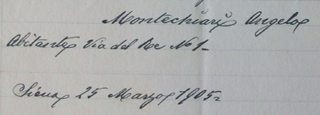

|
(Spanziano) 2/8 - talvolta si trova scritto Spansiano - Nato a Manciano (GR) il 9 maggio 1875 (vedi) Morto allo spedale di Siena il 14 novembre 1909 (altre notizie) Trasferitosi da Manciano a Siena il 15 dicembre 1903 
1 Palio straordinario.   
 
 
 | |||||||||||||||||||||||||||||||||||||||||||||